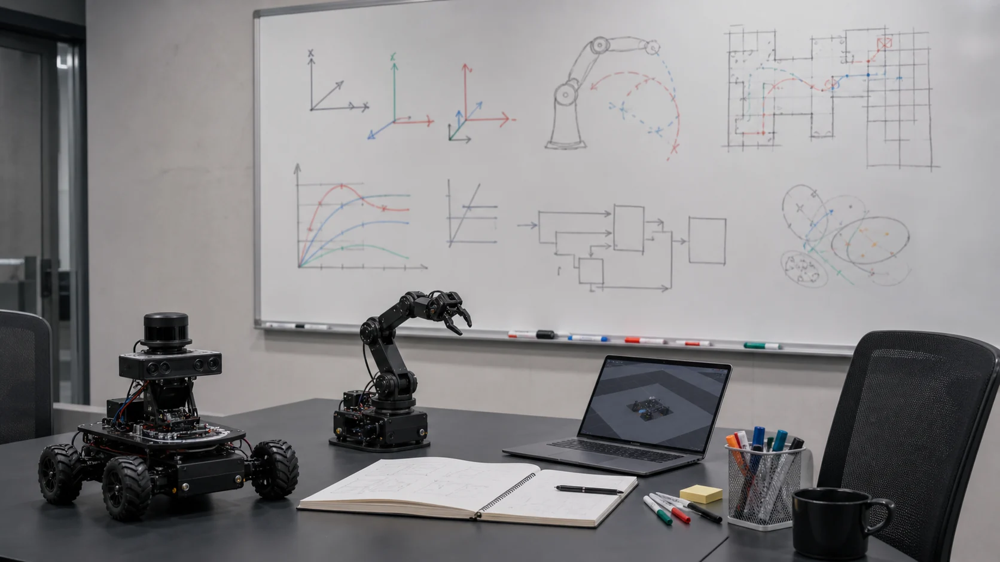

부록 R-B: 로보틱스 면접 CS 단골 Q&A
로봇·자율주행 직무 면접에서 가장 자주 나오는 질문을 좌표변환 · 상태추정 · 제어(PID) · 기구학 · ROS 2 · SLAM/내비 · 인식/학습 7개 카테고리, 총 24문항으로 정리했습니다. 각 답변은 R0~R10 본편에서 직접 실행·검증한 내용을 기반으로 하며, "왜 그런가"와 면접 꼬리 질문까지 함께 담았습니다.
🧭 A. 좌표계와 변환 (R1 · R4 · R7)
Q1. SO(3)와 SE(3)의 차이를 설명하세요
SO(3)(Special Orthogonal group)는 회전만 나타내는 3×3 회전행렬의 집합이고, SE(3)(Special Euclidean group)는 회전 + 평행이동을 함께 나타내는 4×4 동차변환행렬(homogeneous transform)의 집합입니다. 로봇의 "자세(pose)"는 위치와 방향을 모두 가지므로 SE(3)로 표현합니다.
💡 비유: 사람의 "어디에" + "어느 쪽을 보고"
SO(3)는 제자리에서 몸을 어느 방향으로 틀었는지(고개 방향)만 말합니다. SE(3)는 "지금 부엌에 서서 창문 쪽을 보고 있다"처럼 위치(평행이동)와 방향(회전)을 한 덩어리로 말합니다. 로봇 팔 끝(end-effector)이 "공간 어디에서 어느 자세로" 있는지는 항상 SE(3)입니다.

회전행렬 R(SO(3))의 핵심 성질 3가지: ① 직교(RᵀR = I) ② 역행렬 = 전치(R⁻¹ = Rᵀ, 그래서 역변환이 공짜) ③ det(R) = +1(거울반사 없는 순수 회전). 이 성질 덕분에 변환을 거꾸로 푸는 비용이 거의 없습니다.
import numpy as np
# SE(3): 회전 R(3x3) + 위치 p(3,)를 4x4 한 덩어리로
def make_T(R, p):
T = np.eye(4); T[:3,:3] = R; T[:3,3] = p
return T
# 역변환은 R^T 성질을 쓰면 inv 호출 없이 공짜
def invert_T(T):
R, p = T[:3,:3], T[:3,3]
Ti = np.eye(4); Ti[:3,:3] = R.T; Ti[:3,3] = -R.T @ p
return Ti💡 면접 꼬리 질문: "동차변환행렬이 왜 굳이 4×4인가요?" → 회전(3×3)과 평행이동(3×1)을 한 번의 행렬곱으로 합성하기 위해서입니다. 마지막 행 [0 0 0 1]은 점을 [x y z 1]로 확장(동차좌표)해 "회전 후 평행이동"을 곱셈 하나로 연결해 줍니다. 변환을 여러 개 이어 붙일 때(T₁ @ T₂ @ T₃) 코드가 깔끔해집니다.
Q2. 짐벌락(Gimbal Lock)이란 무엇이고, 왜 쿼터니언을 쓰나요?
짐벌락은 오일러각(roll-pitch-yaw)으로 회전을 표현할 때, 두 번째 축(보통 pitch)이 ±90°가 되면 세 회전축 중 두 개가 같은 방향으로 정렬되어 자유도 하나를 잃는 현상입니다. 이 지점 근처에서는 작은 자세 변화에 각도값이 폭발적으로 튀어(특이점) 제어가 불안정해집니다.
쿼터니언(quaternion, 4개 수 x·y·z·w)은 짐벌락이 없고, 회전 보간(SLERP)이 매끄러우며, 수치 오차가 누적돼도 정규화 한 번이면 다시 유효한 회전이 됩니다. 그래서 ROS의 geometry_msgs/Quaternion, 게임/항공 자세 표현이 모두 쿼터니언입니다. 단점은 사람이 숫자만 보고 직관적으로 읽기 어렵다는 것 — 그래서 저장·계산은 쿼터니언, 사람에게 보여줄 땐 오일러각으로 변환합니다.
from scipy.spatial.transform import Rotation as Rot
# z축 90° 회전 → 쿼터니언(x,y,z,w)
q = Rot.from_euler('z', 90, degrees=True).as_quat() # [0, 0, 0.7071, 0.7071]
# 회전은 곱셈 순서가 중요(비가환): R_z*R_x ≠ R_x*R_z
Rz = Rot.from_euler('z', 90, degrees=True)
Rx = Rot.from_euler('x', 90, degrees=True)
(Rz*Rx).apply([0,0,1]) # [ 1, 0, 0]
(Rx*Rz).apply([0,0,1]) # [ 0,-1, 0] ← 순서 바꾸면 결과가 다름!✅ 검증값
q(z90°)=[0 0 0.7071 0.7071] · (Rz·Rx)[0,0,1]→[1 0 0] · (Rx·Rz)[0,0,1]→[0 -1 0]
💡 면접 꼬리 질문: "회전 합성이 교환법칙이 성립하지 않는 이유는?" → 회전은 행렬(또는 쿼터니언) 곱이고, 행렬곱은 일반적으로 AB ≠ BA이기 때문입니다. 물리적으로도 "고개를 든 뒤 왼쪽으로 돈 것"과 "왼쪽으로 돈 뒤 고개를 든 것"의 최종 시선 방향이 다릅니다.
Q3. ROS의 TF(TF2)란 무엇이고 왜 필요한가요?
TF2는 로봇의 수많은 좌표계(map → odom → base_link → laser → camera ...) 사이의 변환 관계를 트리(tree) 구조로 관리하고, "지금 카메라가 본 점을 map 좌표로 바꿔줘" 같은 질문에 시간까지 고려해 답해 주는 ROS 표준 라이브러리입니다. 센서는 제각기 다른 위치에 붙어 있으므로, 데이터를 융합하려면 모두 같은 기준 좌표계로 변환해야 하는데 그 변환을 일일이 손으로 곱하지 않게 해 줍니다.
💡 비유: 가족 관계도 + 환율 자동 변환
각 좌표계는 가족 관계도의 사람이고, 부모→자식 간 변환(SE3)은 "혈연 관계"입니다. TF는 map의 점을 camera에서 보면 어디인가?를, 트리 경로를 따라 변환을 자동으로 이어 곱해(그리고 필요하면 역변환) 즉시 알려 줍니다. 환율 테이블이 있으면 원→달러→엔을 자동 계산해 주는 것과 같습니다.
핵심 규칙: ① TF 트리는 한 노드(좌표계)에 부모가 하나여야 함(사이클·다중부모 금지) ② frame_id=부모, child_frame_id=자식 ③ 변하지 않는 변환(base_link→camera)은 static_transform_publisher로, 움직이는 변환(odom→base_link)은 주기적으로 broadcast.
💡 면접 꼬리 질문: "map과 odom 프레임을 왜 분리하나요?" → odom→base_link는 바퀴 오도메트리로 매끄럽지만 시간이 지나면 드리프트(누적오차)가 생깁니다. map→odom은 SLAM/AMCL이 드리프트를 보정하는 "점프 가능한" 변환입니다. 이렇게 분리하면 제어는 매끄러운 odom을 쓰고, 전역 위치는 map으로 정확히 맞출 수 있습니다.
Q4. REP-103 좌표 규약(오른손 좌표계, x-앞/z-위)을 아시나요?
ROS는 REP-103 표준을 따릅니다: 오른손 좌표계에서 x = 앞(전방), y = 왼쪽, z = 위. 회전은 오른손 법칙으로 +yaw = 반시계(좌회전). 단위는 미터·라디안·초(SI). 광학 카메라 프레임만 예외적으로 z = 광축(앞), x = 오른쪽, y = 아래를 써서 컴퓨터비전 관례와 맞춥니다.
이걸 모르면 "로봇이 직진 명령에 옆으로 가는" 류의 버그를 만나게 됩니다. 부호·축 순서를 헷갈리면 변환 전체가 거울처럼 뒤집힙니다.
💡 면접 꼬리 질문: "오른손 좌표계인지 어떻게 확인하나요?" → 세 축 단위벡터로 x × y = z(외적)가 성립하면 오른손 좌표계입니다. 회전행렬이라면 det(R) = +1이면 오른손(순수 회전), -1이면 반사가 섞인 것입니다.
📡 B. 센서와 상태추정 (R2 · R9)
Q5. 칼만 필터의 동작 원리를 설명하세요
칼만 필터는 예측(predict)과 보정(update) 두 단계를 반복하며, "모델 예측값"과 "노이즈 섞인 측정값"을 각자의 불확실성에 반비례하는 가중치로 섞어 최적 추정을 만듭니다. 핵심은 칼만 게인 K: 측정이 믿을 만하면(측정분산 R 작음) K가 1에 가까워 측정을 많이 반영하고, 측정이 부정확하면 K가 0에 가까워 예측을 유지합니다.
# 1D 칼만 보정 한 스텝 (x=추정, P=추정분산, R=측정분산, z=측정)
x, P, R = 0.0, 1.0, 0.1
z = 1.0
K = P / (P + R) # 칼만 게인 = 0.909
x = x + K * (z - x) # 0.0 → 0.909 (측정 쪽으로 끌려감)
P = (1 - K) * P # 1.0 → 0.0909 (확신이 커짐 = 분산 감소)✅ 검증값
K=0.909 · x: 0.0 → 0.909 · P: 1.0 → 0.0909 (보정 후 불확실성 감소)
💡 면접 꼬리 질문: "EKF(확장 칼만 필터)는 언제 쓰나요?" → 기본 칼만은 시스템이 선형이고 노이즈가 가우시안일 때만 최적입니다. 로봇 운동(예: x' = x + v·cosθ·dt)은 비선형이므로, 매 스텝 자코비안으로 1차 선형화해서 칼만을 적용하는 EKF를 씁니다. 선형화가 심하게 틀어지면 UKF나 파티클 필터를 고려합니다.
Q6. 센서 퓨전(Sensor Fusion)이 왜 필요한가요?
완벽한 센서는 없기 때문입니다. 각 센서는 서로 보완되는 약점을 가집니다. 예를 들어 IMU(자이로/가속도계)는 짧은 시간엔 매우 정밀하지만 적분 때문에 시간이 지나면 드리프트가 쌓입니다. 반대로 GPS/엔코더/라이다 매칭은 느리고 노이즈가 있지만 절대 위치 기준을 줍니다. 둘을 칼만 필터로 융합하면 "단기 정밀 + 장기 안정"을 동시에 얻습니다.
💡 비유: 빠른 추측 + 가끔 보는 이정표
눈 감고 걸으며 "한 걸음 = 70cm"로 위치를 추측(IMU)하면 처음 몇 걸음은 정확하지만 점점 어긋납니다. 가끔 눈을 떠 이정표(GPS)를 보면 어긋남을 한 번에 바로잡습니다. 칼만 필터의 predict = 눈 감고 추측, update = 이정표로 보정이 정확히 이 구조입니다.
💡 면접 꼬리 질문: "상보필터(Complementary filter)와 칼만 필터의 차이는?" → 상보필터는 "고주파는 자이로, 저주파는 가속도계"를 고정 가중치로 섞는 가벼운 방법이고, 칼만은 불확실성을 추적해 가중치(게인)를 매 스텝 최적으로 조정합니다. 연산 여유가 적은 MCU에선 상보필터, 정밀도가 필요하면 칼만을 씁니다.
Q7. 나이퀴스트 정리와 샘플링 주파수를 설명하세요
나이퀴스트-섀넌 정리: 신호에 들어 있는 최고 주파수를 f_max라 하면, 그 신호를 손실 없이 복원하려면 샘플링 주파수가 2·f_max보다 커야 합니다. 이를 어기면 에일리어싱(aliasing) — 빠른 신호가 느린 가짜 신호로 둔갑하는 현상 — 이 생깁니다(바퀴가 거꾸로 도는 것처럼 보이는 영상이 대표 예시).
로봇에선 제어 루프 주파수, 엔코더 샘플링, 카메라 fps를 정할 때 직접 영향을 줍니다. 대책은 ① 샘플링을 충분히 빠르게 ② 샘플링 전에 안티에일리어싱 저역통과 필터로 고주파를 미리 잘라내기.
💡 면접 꼬리 질문: "이동평균(moving average) 필터의 단점은?" → 구현이 쉽고 노이즈를 잘 줄이지만, 창(window) 크기만큼 지연(latency)이 생기고 급격한 변화를 뭉갭니다. 제어 루프에 넣으면 이 지연이 위상 마진을 깎아 불안정을 유발할 수 있어, 지연이 중요한 곳엔 칼만이나 IIR 필터를 고려합니다.
🎛️ C. 제어 이론 — PID (R5)
Q8. PID 제어기의 P·I·D 각 항의 역할을 설명하세요
PID는 목표값과 현재값의 오차(error)를 보고 제어 입력 u = Kp·e + Ki·∫e dt + Kd·de/dt를 만듭니다.
P — 비례
현재 오차에 비례해 즉시 반응. 크게 하면 빨라지지만 너무 크면 진동·오버슈트. P만으로는 보통 목표에 완전히 도달하지 못하고 정상상태 오차(steady-state error)가 남습니다.
I — 적분
과거 오차를 누적해 정상상태 오차를 0으로 밀어냅니다. 대신 위상 지연을 더해 과하면 진동·오버슈트가 커집니다.
D — 미분
오차의 변화율에 반응해 브레이크(댐핑) 역할. 오버슈트를 줄이고 안정성을 높이지만 측정 노이즈를 증폭하므로 보통 저역통과를 함께 씁니다.
본편 R5에서 2차 플랜트(질량+감쇠)로 직접 시뮬레이션한 결과: P만 → 정상상태 오차 남음, PI → 오차 0이지만 오버슈트 1.39, PID → 오버슈트 1.19로 감소. D항이 오버슈트를 깎는 걸 수치로 확인했습니다.
💡 면접 꼬리 질문: "P 게인만 계속 올리면 어떻게 되나요?" → 응답은 빨라지지만 오버슈트와 진동이 커지고, 어느 임계 게인을 넘으면 발산(불안정)합니다. 이 임계점을 이용하는 게 지글러-니콜스 튜닝법입니다.
Q9. 적분 와인드업(Integral Windup)이란? 어떻게 방지하나요?
액추에이터에는 물리적 한계(포화, saturation)가 있습니다(모터 최대 출력 등). 오차가 오래 지속되면 적분항 ∫e dt가 계속 커지는데, 출력은 이미 최대치에 막혀 있으면 적분값만 과도하게 부풀어 오릅니다. 그러면 목표에 도달한 뒤에도 부푼 적분이 다 빠질 때까지 제어기가 반대로 밀어 큰 오버슈트와 느린 회복을 만듭니다 — 이것이 와인드업입니다.
방지법: ① 적분 클램핑(적분값에 상·하한) ② back-calculation(출력이 포화된 만큼 적분을 되돌림) ③ 포화 중에는 적분 중지(conditional integration).
integral += e * dt
integral = max(min(integral, I_MAX), -I_MAX) # ① 적분 클램핑
u = Kp*e + Ki*integral + Kd*(e - prev_e)/dt
u = max(min(u, U_MAX), -U_MAX) # 출력 포화💡 면접 꼬리 질문: "왜 단순히 출력만 클램핑하면 안 되나요?" → 출력만 자르면 적분항 내부는 계속 부풀기 때문입니다. 출력을 자르는 동시에 적분 누적 자체를 멈추거나 되돌려야 와인드업이 사라집니다.
Q10. 미분 킥(Derivative Kick)이란 무엇인가요?
목표값(setpoint)을 계단처럼 갑자기 바꾸면 오차 e = target − measured가 순간적으로 점프하고, 미분항 Kd·de/dt가 그 순간 거대한 스파이크를 출력합니다 — 이것이 미분 킥입니다. 액추에이터에 충격을 주고 진동을 유발합니다.
해법은 오차가 아니라 측정값의 미분을 쓰는 "derivative-on-measurement": Kd·d(measured)/dt. 목표값은 계단이어도 측정값은 연속적으로 변하므로 스파이크가 사라집니다. (본편 R5에서 실제로 prev_e = target − p로 초기화해 이 킥을 막았습니다.)
# 나쁨: 오차 미분 → setpoint 점프 시 스파이크
D = Kd * (e - prev_e) / dt
# 좋음: 측정값 미분 → 미분 킥 없음 (부호 주의: -)
D = -Kd * (meas - prev_meas) / dt💡 면접 꼬리 질문: "피드포워드(feed-forward)는 왜 같이 쓰나요?" → 피드백(PID)은 오차가 생긴 뒤에야 반응합니다. 시스템 모델을 알면 "이 목표엔 대략 이만큼 출력이 필요"를 미리 더해(피드포워드) 오차가 생기기 전에 대응하고, PID는 남은 오차만 잡게 해 응답을 크게 개선합니다.
🦾 D. 기구학 — Kinematics (R4)
Q11. 정기구학(FK)과 역기구학(IK)의 차이는?
정기구학(Forward Kinematics)은 "각 관절 각도가 주어졌을 때 손끝이 어디에 가는가?" — 관절각 → 손끝 위치. 항상 유일한 해가 있고 행렬 곱(DH 변환 합성)으로 바로 계산됩니다. 역기구학(Inverse Kinematics)은 그 반대 — "손끝을 여기 두려면 관절각을 어떻게?" — 손끝 위치 → 관절각. 이쪽이 훨씬 어렵습니다.
IK가 어려운 이유: ① 해가 여러 개(2자유도 팔도 "팔꿈치 위/아래" 2해) ② 해가 없을 수도(작업공간 밖) ③ 비선형이라 보통 닫힌형 해가 없고 수치해(자코비안 역행렬 반복)를 씁니다.
본편 R4에서 2링크 팔의 IK를 코사인법칙으로 풀어 두 해(elbow-up/down)를 구하고, FK로 다시 넣어 원래 목표 위치로 돌아오는지 왕복 검증했습니다.
💡 면접 꼬리 질문: "IK 해가 여러 개일 때 무엇을 고르나요?" → 보통 현재 관절각에서 이동량이 가장 적은 해(부드러운 동작), 또는 장애물·관절한계·특이점을 피하는 해를 고릅니다.
Q12. 자코비안과 특이점(Singularity)을 설명하세요
자코비안 J는 관절 속도와 손끝 속도를 잇는 행렬입니다: ẋ = J·q̇. 즉 "관절을 이렇게 빠르게 돌리면 손끝이 어느 방향으로 얼마나 빠르게 움직이는가"의 선형 사상입니다. 힘 영역에서는 τ = Jᵀ·F로 손끝 힘 ↔ 관절 토크도 연결합니다.
특이점은 자코비안이 랭크를 잃는(det J = 0) 자세입니다. 대표적으로 팔이 완전히 펴진 자세 — 그 방향으로는 손끝을 더 못 움직이고, 그 방향 속도를 내려면 관절 속도가 무한대로 폭발합니다(IK 수치해가 발산). 그래서 특이점 근처를 회피하거나 damped least-squares로 완화합니다.
💡 면접 꼬리 질문: "특이점 근처인지 어떻게 감지하나요?" → 자코비안의 행렬식 det(J)이나 최소 특이값(SVD)이 0에 가까워지는지를 봅니다. manipulability = sqrt(det(J·Jᵀ)) 지표가 작아지면 특이점이 가깝다는 신호입니다.
Q13. 차동구동(Differential Drive) 로봇의 운동학은?
좌우 두 바퀴의 속도 v_L, v_R로 움직이는 로봇(룸바, 대부분의 교육용 로봇)입니다. 바퀴 간격을 L이라 하면 로봇의 선속도와 각속도는:
v = (v_R + v_L) / 2 # 선속도 (전진)
w = (v_R - v_L) / L # 각속도 (회전)
# 예: v_L=0.4, v_R=0.6, L=0.5 → v=0.50 m/s, w=0.40 rad/s
# 자세 적분(오도메트리)
x += v * cos(theta) * dt
y += v * sin(theta) * dt
theta += w * dt양 바퀴가 같으면 직진(w=0), 반대면 제자리 회전(v=0). 이렇게 바퀴 속도로부터 자세를 적분하는 것이 휠 오도메트리입니다.
💡 면접 꼬리 질문: "차동구동은 왜 비홀로노믹(non-holonomic)인가요?" → 바퀴가 옆으로(lateral) 미끄러지지 못해 옆 방향으로 즉시 이동할 수 없기 때문입니다. 그래서 평행주차처럼 옆 위치를 바꾸려면 전진·회전을 조합한 경로가 필요하고, 경로계획이 자동차(Ackermann)처럼 곡률 제약을 받습니다.
🔗 E. ROS 2 (R6 · R7)
Q14. ROS 2가 ROS 1과 다른 핵심은?
가장 큰 차이는 ROS 1의 중앙 roscore(master)가 사라지고, DDS(Data Distribution Service) 기반 분산 디스커버리로 바뀐 것입니다. master가 죽으면 전체가 멈추던 단일 장애점이 없어졌습니다. 또한 ① QoS로 통신 신뢰성·실시간성 조절 ② 멀티플랫폼/실시간 지원 ③ 보안(SROS2) ④ rclcpp/rclpy로 언어 바인딩 통일.
💡 면접 꼬리 질문: "DDS 디스커버리는 어떻게 노드를 찾나요?" → 같은 ROS_DOMAIN_ID를 가진 노드들이 멀티캐스트로 서로를 자동 발견(주로 동일 네트워크)합니다. 그래서 DOMAIN_ID가 다르면 같은 토픽이라도 서로 안 보이고, 이를 이용해 여러 로봇을 격리합니다.
Q15. 토픽 · 서비스 · 액션은 각각 언제 쓰나요?
📢 토픽 (Topic)
단방향·연속 스트림, 발행/구독(pub/sub), 다대다. 응답 불필요. 예: 센서 데이터(/scan, /imu), 속도 명령(/cmd_vel).
📞 서비스 (Service)
요청-응답(동기), 1회성, 빠르게 끝나는 작업. 예: "현재 지도 저장해줘", "파라미터 설정". 오래 걸리면 부적합.
🎯 액션 (Action)
오래 걸리는 목표 + 진행 피드백 + 취소. 예: "저 좌표까지 이동(Nav2)", "팔을 여기로". 중간 진행률을 받고 도중 취소 가능.
요약: 흘려보내면 토픽 / 즉답이면 서비스 / 오래 걸리고 취소·진행이 필요하면 액션.
💡 면접 꼬리 질문: "속도 명령(/cmd_vel)을 왜 서비스가 아닌 토픽으로?" → 제어는 끊임없이 갱신되는 연속 스트림이고 응답이 필요 없으며, 최신값만 중요하기 때문입니다. 요청-응답 오버헤드가 있는 서비스는 부적합합니다.
Q16. QoS(Quality of Service)란 무엇인가요?
DDS/ROS 2에서 퍼블리셔와 구독자의 통신 정책을 정하는 설정입니다. 핵심 항목: ① Reliability — RELIABLE(재전송 보장, TCP 느낌) vs BEST_EFFORT(유실 허용, 빠름, UDP 느낌) ② Durability — TRANSIENT_LOCAL(늦게 들어온 구독자에게도 마지막 값 전달) vs VOLATILE ③ History/Depth — 버퍼 큐 크기.
중요한 함정: 퍼블리셔와 구독자의 QoS가 호환되지 않으면 연결 자체가 안 됩니다. 예를 들어 센서 데이터는 보통 BEST_EFFORT로 쏘는데 구독자가 RELIABLE을 요구하면 메시지가 한 개도 안 들어옵니다.
💡 면접 꼬리 질문: "라이다 같은 센서 스트림에 BEST_EFFORT를 쓰는 이유는?" → 한두 프레임 놓쳐도 다음 프레임이 곧 오고, 재전송으로 지연이 쌓이는 것보다 최신성이 더 중요하기 때문입니다. 반대로 지도·정적 TF처럼 "꼭 도착해야 하는" 데이터는 RELIABLE + TRANSIENT_LOCAL을 씁니다.
Q17. 노드·executor·콜백의 관계를 설명하세요
ROS 2에서 노드는 퍼블리셔·구독자·타이머·서비스를 담는 단위이고, 이들의 콜백(메시지 도착·타이머 만료 시 실행되는 함수)을 실제로 돌려 주는 엔진이 executor입니다. rclpy.spin(node)가 기본 단일스레드 executor를 돌려 콜백을 순차 처리합니다.
주의: 기본은 단일스레드라 한 콜백이 오래 걸리면(블로킹) 다른 콜백이 굶습니다. 동시에 처리하려면 MultiThreadedExecutor + 콜백 그룹(Reentrant/MutuallyExclusive)으로 병렬성을 제어합니다.
💡 면접 꼬리 질문: "구독 콜백 안에서 서비스를 동기 호출하면 왜 데드락이 날 수 있나요?" → 단일스레드 executor에선 콜백이 실행 중이면 응답을 처리할 콜백이 돌 수 없어 서로 기다리다 멈춥니다. 비동기 호출을 쓰거나 별도 콜백 그룹/스레드로 분리해야 합니다.
🗺️ F. SLAM과 내비게이션 (R9)
Q18. SLAM이란 무엇이고 왜 어려운가요?
SLAM(Simultaneous Localization And Mapping)은 지도를 모르는 채로 로봇이 지도를 만들면서 동시에 그 지도 안에서 자기 위치를 추정하는 문제입니다. 어려운 이유는 닭과 달걀 문제이기 때문입니다: 정확한 위치를 알려면 지도가 필요하고, 정확한 지도를 만들려면 위치를 알아야 합니다. 둘 다 불확실한 상태에서 서로를 동시에 풀어야 합니다.
💡 비유: 눈 가리고 낯선 방 그리기
처음 보는 방에서 손으로 벽을 더듬으며 지도를 그립니다. 그런데 "내가 지금 어디 있는지"도 더듬은 기억(불확실한 위치)으로만 압니다. 위치가 틀리면 지도가 비뚤어지고, 비뚤어진 지도로 위치를 또 잘못 잡는 악순환 — SLAM은 이 둘의 오차를 확률적으로 함께 최소화합니다.
💡 면접 꼬리 질문: "루프 클로저(loop closure)가 왜 중요한가요?" → 돌아다니다 예전에 왔던 곳을 다시 알아보는 순간, 그동안 누적된 드리프트를 한꺼번에 보정해 지도 전체를 정합시킬 수 있습니다. 루프 클로저가 없으면 큰 공간에서 지도가 점점 어긋나 닫히지 않습니다.
Q19. A* 경로계획과 휴리스틱의 admissibility를 설명하세요
A*는 각 노드를 f = g + h로 평가합니다: g=출발점에서 여기까지 실제 비용, h=여기서 목표까지의 추정 비용(휴리스틱). 우선순위 큐(heapq)에서 f가 가장 작은 노드를 먼저 확장합니다. 다익스트라에 "목표 방향 감"을 더해 훨씬 적은 노드만 탐색합니다.
최단경로를 보장하려면 휴리스틱이 admissible(실제 비용을 절대 과대평가하지 않음)해야 합니다. 4방향 격자에선 맨해튼 거리, 8방향(대각 허용)에선 대각/유클리드 거리가 admissible합니다.
import heapq
def heuristic(a, b): # 4방향 격자 → 맨해튼(과대평가 안 함)
return abs(a[0]-b[0]) + abs(a[1]-b[1])
# 예: (0,0)→(3,4) 맨해튼 7, 유클리드 5.0
# 4방향에서 실제 최소 이동도 7이므로 7은 admissible(<=실제)💡 면접 꼬리 질문: "글로벌 플래너와 로컬 플래너(Nav2)의 차이는?" → 글로벌 플래너(A*/Dijkstra)는 전체 지도에서 출발→목표의 큰 경로를 한 번 계산합니다. 로컬 플래너(DWB/TEB)는 그 경로를 따라가며 실시간 장애물 회피와 속도 명령을 만듭니다. 갑자기 나타난 사람은 로컬이 피하고, 길이 완전히 막히면 글로벌이 재계획합니다.
Q20. 점유 격자 지도(Occupancy Grid)란?
공간을 일정 크기의 격자 셀로 나누고, 각 셀이 장애물일 확률을 담는 지도입니다. ROS의 nav_msgs/OccupancyGrid는 각 셀을 0~100(점유 확률 %) 또는 -1(미지) 값으로 표현합니다. 라이다가 셀을 통과하면 "비었음" 쪽으로, 셀에서 반사되면 "점유" 쪽으로 로그-오즈(log-odds) 방식으로 확률을 누적 갱신합니다.
💡 면접 꼬리 질문: "격자 해상도(cell size)는 어떻게 정하나요?" → 작게 하면 정밀하지만 메모리·연산이 제곱으로 늘고, 크게 하면 좁은 통로를 못 지나갈 수 있습니다. 보통 로봇 폭과 센서 정밀도를 기준으로 5~10cm를 쓰고, 경로계획 시 로봇 반경만큼 장애물을 부풀리는 인플레이션(inflation)을 더합니다.
👁️ G. 인식과 학습제어 (R8 · R10)
Q21. 카메라 · 라이다 · 레이더를 비교하세요
📷 카메라
색·질감·표지판 등 풍부한 의미정보, 저렴. 단점: 깊이 직접 측정 불가(스테레오/추정 필요), 조명·날씨에 취약.
📡 라이다(LiDAR)
레이저로 정밀한 3D 거리를 직접 측정, 조명 무관. 단점: 비싸고, 비·안개·유리에 약하며 색 정보 없음.
📶 레이더(Radar)
전파라 악천후에 강하고 도플러로 속도를 직접 측정. 단점: 해상도가 낮아 형상 구분이 약함.
그래서 자율주행은 셋을 융합해 서로의 약점을 메웁니다(카메라=무엇인지, 라이다=정확히 어디, 레이더=얼마나 빠르게).
💡 면접 꼬리 질문: "OpenCV에서 색 검출을 RGB가 아니라 HSV로 하는 이유는?" → RGB는 밝기 변화에 세 채널이 모두 출렁여 임계값 잡기가 어렵습니다. HSV는 색상(H)이 조명과 비교적 분리돼 있어, 그림자가 져도 같은 색을 안정적으로 잡습니다(R8에서 inRange로 실습).
Q22. 강화학습(RL)이 지도학습과 다른 점은?
지도학습은 "입력→정답 라벨" 쌍으로 배웁니다. 강화학습은 정답 라벨이 없고, 에이전트가 환경에서 행동(action)하고 보상(reward)을 받으며 시행착오로 "장기 누적 보상을 최대화하는 정책(policy)"을 학습합니다. 로봇 제어처럼 "매 순간의 정답은 모르지만 결과의 좋고 나쁨은 아는" 문제에 맞습니다.
본편 R10에서 4×4 격자의 Q-러닝을 실제 실행했습니다. 핵심 갱신식:
# Q-러닝 업데이트: 받은 보상 + 다음 상태 최선값으로 현재 Q를 보정
Q[s, a] += alpha * (r + gamma * max(Q[s2]) - Q[s, a])
# 학습률 (보상 + 할인된 미래가치 - 현재추정) = TD 오차
action = argmax(Q[s]) # 학습된 정책: 그 상태에서 Q가 가장 큰 행동💡 면접 꼬리 질문: "탐험(exploration)과 활용(exploitation)의 트레이드오프는?" → 아는 최선만 반복(활용)하면 더 좋은 길을 못 찾고, 무작정 새 행동만 하면(탐험) 학습이 안 됩니다. ε-greedy처럼 대부분은 최선을 쓰되 가끔 무작위로 탐험하고, 학습이 진행될수록 ε를 줄여 균형을 맞춥니다.
Q23. 시뮬레이션(Gazebo)을 먼저 쓰는 이유와 sim-to-real 갭은?
실물 로봇은 비싸고, 망가지고, 한 번 시도에 시간이 오래 걸립니다. 시뮬레이터(Gazebo/Isaac)에서는 빠르고 안전하게 수천 번 실험하고, 위험한 상황(충돌·낙하)도 마음껏 테스트합니다. 강화학습은 특히 수백만 스텝이 필요해 시뮬이 거의 필수입니다.
하지만 sim-to-real 갭이 있습니다: 시뮬은 마찰·센서 노이즈·지연·질량을 완벽히 재현하지 못해, 시뮬에서 잘 되던 정책이 실물에서 실패할 수 있습니다. 대책은 도메인 랜덤화(마찰·질량·노이즈를 무작위로 흔들어 강건하게 학습), 정밀한 센서 모델링, 실물 미세조정입니다.
💡 면접 꼬리 질문: "URDF란 무엇인가요?" → 로봇의 링크(link)와 조인트(joint), 즉 기구 구조·치수·관절 종류를 적은 XML 기술 파일입니다. RViz 시각화, TF 트리 생성, Gazebo 물리 시뮬이 모두 이 URDF를 읽어 로봇 모델을 구성합니다(R7 실습).
Q24. 로봇 제어 루프의 실시간성과 안전은 왜 중요한가요?
제어 루프(예: PID, 균형 제어)는 일정한 주기로 정확히 돌아야 합니다. 주기가 들쭉날쭉하면(jitter) 미분·적분 항의 dt가 흔들려 제어가 불안정해집니다. 그래서 안전이 중요한 저수준 제어는 실시간 보장이 되는 MCU/RTOS에서 고정 주기로 돌리고, 인식·계획 같은 무거운 연산은 상위 컴퓨터(ROS 2)에서 처리하는 계층 분리가 표준입니다.
안전 설계의 기본: ① 워치독 타이머(상위 명령이 끊기면 자동 정지) ② 속도·토크·작업공간 한계 강제 ③ 비상정지(E-stop)는 소프트웨어를 거치지 않는 하드웨어 경로 ④ 명령 끊김 시 안전한 기본 상태(정지)로 수렴.
💡 면접 꼬리 질문: "/cmd_vel이 끊기면 왜 로봇이 멈춰야 하나요?" → 마지막 속도 명령을 계속 유지하면, 상위 노드나 통신이 죽었을 때 로봇이 제어 불능 상태로 계속 달려 위험합니다. 그래서 일정 시간 명령이 없으면 자동으로 0속도로 멈추는 타임아웃(워치독)을 둡니다.
📑 카테고리 ↔ 본편 챕터 빠른 색인
| 면접 카테고리 | 핵심 키워드 | 본편 |
|---|---|---|
| 좌표·변환 | SO(3)/SE(3)·쿼터니언·TF·REP-103 | R1 · R7 |
| 센서·상태추정 | 칼만·센서퓨전·나이퀴스트 | R2 · R9 |
| 제어(PID) | P/I/D·와인드업·미분킥·피드포워드 | R5 |
| 기구학 | FK/IK·자코비안·특이점·차동구동 | R4 |
| ROS 2 | DDS·토픽/서비스/액션·QoS·executor | R6 · R7 |
| SLAM·내비 | SLAM·루프클로저·A*·점유격자·Nav2 | R9 |
| 인식·학습 | 카메라/라이다/레이더·HSV·Q러닝·sim2real | R8 · R10 |
💡 면접 전략: 답을 외우기보다 "왜 그렇게 설계했는가"를 한 문장으로 설명할 수 있게 연습하세요. 면접관은 정답보다 트레이드오프를 이해하는지를 봅니다. 각 질문의 "면접 꼬리 질문"이 바로 그 깊이를 파는 지점입니다.